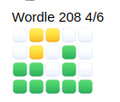

Wordle50
For this 问题, you’ll implement a program that behaves similarly to the popular Wordle daily word game.
$ ./wordle 5
This is WORDLE50
You have 6 tries to guess the 5-letter word I'm thinking of
Input a 5-letter word: crash
Guess 1: crash
Input a 5-letter word: scone
Guess 2: scone
Input a 5-letter word: since
Guess 3: since
You won!
入门
打开 VS Code.
开始 by clicking inside your terminal window, then execute cd by itself. You should find that its “prompt” resembles the below.
$
Click inside of that terminal window and then execute
wget https://cdn.cs50.net/2022/fall/psets/2/wordle.zip
followed by Enter in order to 下载 a ZIP called wordle.zip in your codespace. Take care not to overlook the space between wget and the following URL, or any other character for that matter!
Now execute
unzip wordle.zip
to create a folder called wordle. You no longer need the ZIP file, so you can execute
rm wordle.zip
and respond with “y” followed by Enter 在 the prompt to remove the ZIP file you downloaded.
Now type
cd wordle
followed by Enter to move yourself into (i.e., 打开) that directory. Your prompt should now resemble the below.
wordle/ $
If all was successful, you should execute
ls
and see a file named wordle.c, as well as 5.txt, 6.txt, 7.txt and 8.txt. Executing code wordle.c should 打开 the file where you will type your code for this 问题集. If not, retrace your steps and see if you can determine where you went wrong! If you try to compile the game now, it will do so without errors, but when you try to run it you will see this error:
Error opening file 0.txt.
‘Tis normal, though, since you haven’t yet implemented part of the code we need to make that error message go away!
背景
Odds are, if you’re a Facebook user, 在 least one of your friends posted something looking like this, particularly 返回 in early 2022 when it was all the rage:

If so, your friend has played Wordle, and are sharing their results for that day! Each day, a 新内容 “secret word” is chosen (the same for everyone) and the object is to guess what the secret word is within six tries. Fortunately, given that there are 更多 than six five-letter words in the English language, you 五月 get some clues along the way, and the image above actually shows your friend’s progression through their guesses, using those clues to try to 首页 in on the correct word. Using a scheme similar to the game Mastermind, if after you guess that letter turns green, it means not only is that letter in the secret word that day, but it is also in the correct position. If it turns yellow, it means that the letter guessed appears somewhere in the word, but not in that spot. Letters that turn gray aren’t in the word 在 all and can be omitted from future guesses.
Let’s finish writing a program called wordle that enables us to recreate this game and play it in our terminal instead. We’ll make a few slight changes to the game (for 示例, the way it handles a letter appearing twice in a word isn’t the same as how the real game handles it, but for simplicity’s sake, we’ll err on the side of ease of understanding rather than a perfectly faithful interpretation), and we’ll use red text instead of gray to indicate letters that aren’t in the word 在 all. 在 the 时间 the user executes the program, they should decide, by providing a command-line argument, what the length of the word they want to guess is, between 5 and 8 letters.
Here are a few 示例 of how the program should work. For 示例, if the user omits a 命令行 argument entirely:
$ ./wordle
Usage: ./wordle wordsize
If the user instead does provide a command-line argument, but it’s not in the correct range:
$ ./wordle 4
Error: wordsize must be either 5, 6, 7, or 8
Here’s how the program might work if the user provides a key of 5:
$ ./wordle 5
This is WORDLE50
You have 6 tries to guess the 5-letter word I'm thinking of
Input a 5-letter word:
在 which point, the user should type in a 5-letter word. Of 课程, the user could well be stubborn, and we should make sure they’re following the rules:
$ ./wordle 5
This is WORDLE50
You have 6 tries to guess the 5-letter word I'm thinking of
Input a 5-letter word: wordle
Input a 5-letter word: computer
Input a 5-letter word: okay
Input a 5-letter word: games
Guess 1: games
Input a 5-letter word:
Notice that we didn’t even count any of those invalid attempts as guesses. But as soon as they made a legitimate attempt, we counted it as a guess and reported on the status of the word. Looks like the user has a few clues now; they know the word contains an a and an e somewhere, but not in the exact spots they appear in the word games. And they know that g, m, and s don’t appear in the word 在 all, so future guesses can omit them. Perhaps they might try, say, heart 下一页! ❤️
规格说明
Design and implement a program, wordle, that completes the implementation of our Wordle50 clone of the game. You’ll notice that some large pieces of this program have already been written for you–you are not allowed to modify any of those parts of the program. Instead, your work should be constrained to the seven TODOs we’ve left behind for you to fill in. Each one of those parts solves a specific 问题, and we recommend you tackle them in order from 1 to 7. Each numbered TODO corresponds to the same item in the below list.
- In the first
TODO, you should ensure the program accepts a single command-line argument. Let’s call it \(k\) for the sake of 讨论. If the program was not run with a single command-line argument, you should print the error message as we demonstrate above and return1, ending the program. - In the second
TODO, you should make sure that \(k\) is one of the acceptable values (5, 6, 7, or 8), and store that value inwordsize; we’ll need to make use of that later. If the value of \(k\) is not one of those four values exactly, you should print the error message as we demonstrate above and return1, ending the program.
After that, the 工作人员 has already written some code that will go through and 打开 the word list for the length of word the user wants to guess and randomly selects one from the 1000 options available. Don’t worry 关于 necessarily understanding all of this code, it’s not important for purposes of this 作业. We’ll see something similar though in a later 作业, and it will make a lot 更多 sense then! 这是 a good place to stop and test, before proceeding to the 下一页 TODO, that your code behaves as expected. It’s always easier to 调试 programs if you do so methodically!
- For the third
TODO, you should help defend against stubborn users by making sure their guess is the correct length. For that, we’ll turn our attention to the functionget_guess, which you’ll need to implement in full. A user should be prompted (as viaget_string) to type in a \(k\)-letter word (remember, that value is passed in as a parameter toget_guess) and if they supply a guess of the wrong length, they should be re-prompted (much like in 马里奥) until they provide exactly the value you expect from them. Right now, the distribution code doesn’t do that, so you’ll have to make that fix! 笔记 that unlike the real Wordle, we actually don’t check that the user’s guess is a real word, so in that sense the game is perhaps a little bit easier. All guesses in this game should be in lowercase characters, and it is acceptable for you to assume that the user will not be so stubborn as to provide anything other than lowercase characters when making a guess. Once a legitimate guess has been obtained, it can bereturned. - 下一页, for the fourth
TODO, we need to keep track of a user’s “score” in the game. We do this both on a per-letter basis—by assigning a score of 2 (which we#defined asEXACT) to a letter in the correct place, 1 (which we#defined asCLOSE) to a letter that’s in the word but in the wrong place, or 0 (which we#defined asWRONG)—and a per-word basis, to help us detect when we’ve potentially triggered the 结束 of the game by winning. We’ll use the individual letter scores when we color-code the printing. In order to store those scores, we need an array, which we’ve calledstatus. 在 the 开始 of the game, with no guesses having taken place, it should contain all 0s.
这是 another good place to stop and test your code, particularly as it pertains to item 3, above! You’ll notice that 在 this point, when you finally enter a legitimate guess (that is to say, one that’s the correct length), your program will likely look something like the below:
Input a 5-letter word: computer
Input a 5-letter word: games
Guess 1:
Input a 5-letter word:
That’s normal, though! Implementing print_word is TODO number 6, so we should not expect the program to do any processing of that guess 在 this 时间. Of 课程, you can always add additional printf calls (just make sure to remove them before you 提交) as part of your debugging strategy!
- The fifth
TODOis definitely the largest and probably most challenging. Inside of thecheck_wordfunction, it’s up to you to compare each of the letters of theguesswith each of the letters of thechoice(which, recall, is the “secret word” for this game), and assign scores. If the letters match, awardEXACT(2) points andbreakout of the loop—there’s no need to continue looping if you already determined the letter is in the right spot. Technically, if that letter appears in the word twice, this could result in a bit of a bug, but fixing that bug overcomplicates this 问题 a bit 更多 than we want to now, so we’re going to accept that as a feature of our version! If you find that the letter is in the word but not in the right spot, awardCLOSE(1) points but don’tbreak! After all, that letter might later show up in the right spot in thechoiceword, and if webreaktoo soon, the user would never know it! You don’t actually need to explicitly setWRONG(0) points here, since you handled that early in Step 4. Ultimately though, you should also be summing up the total score of the word when you know it, because that’s what this function is supposed to ultimately return. Again, don’t be afraid to usedebug50and/orprintfs as necessary in order to help you figure out what the values of different variables are 在 this point – until you implementprint_word, below, the program won’t be offering you much in the way of a visual checkpoint! - For the sixth
TODOyou will complete the implementation ofprint_word. That function should look through the values you populated thestatusarray with and print out, character by character, each letter of theguesswith the correct color code. You 五月 have noticed some (scary-looking!)#defines 在 the top of the file wherein we provide a simpler way of representing what’s called an ANSI color code, which is basically a command to change the font color of the terminal. You don’t need to worry 关于 how to implement those four values (GREEN,YELLOW,RED, andRESET, the latter of which simply returns to the terminal’s default font) or exactly what they mean; instead, you can just use them (the power of abstraction!). 笔记 as well that we provide an 示例 in the distribution code up where we print some green text and then reset the color, as part of the game’s introduction. Accordingly, you should feel free to use the below line of code for inspiration as to how you might try to toggle colors:
printf(GREEN"This is WORDLE50"RESET"\n");
Of 课程, unlike our 示例, you probably don’t want to print a newline after each character of the word (instead, you just want one newline 在 the 结束, also resetting the font color!), lest it 结束 up looking like the below:
Input a 5-letter word: games
Guess 1: g
a
m
e
s
Input a 5-letter word:
- Finally, the seventh
TODOis just a bit of tidying up before the program terminates. Whether the mainforloop has ended normally, by the user running out of guesses, or because we broke out of it by getting the word exactly right, it’s 时间 to report to the user on the game’s outcome. If the user did win the game, a simpleYou won!suffices to print here. Otherwise, you should print a message telling the user what the target word was, so they know the game was being honest with them (and so that you have a means to 调试 if you look 返回 and realize your code was providing improper clues along the way!)
How to Test Your Code
No check50 for this one!
Execute the below to evaluate the style of your code using style50.
style50 wordle.c
如何提交
No need to 提交!